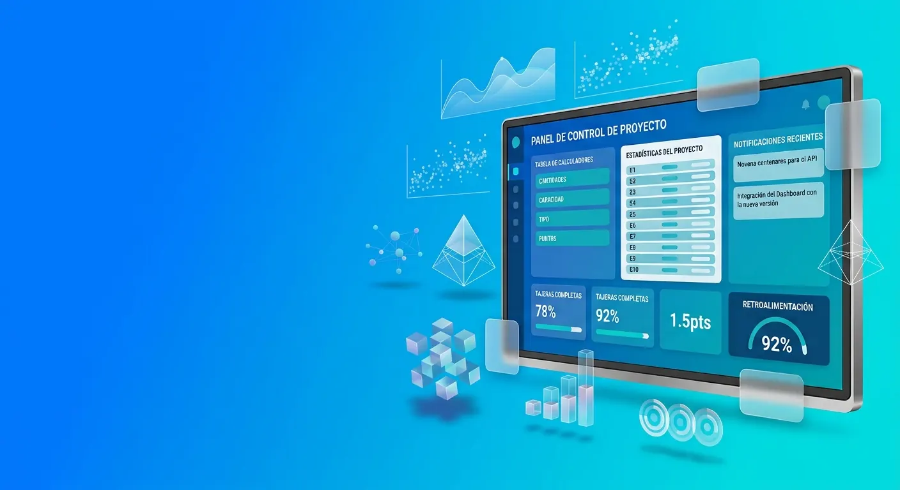

Mi equipo arma hojas de cálculo paralelas porque el sistema no alcanza
Diseñamos un sistema que se adapta a tus procesos reales, para que dejes de compensar a mano lo que el software actual no resuelve.

Desarrollo de Software a Medida
Entendemos el negocio antes de construir el software: diseñamos y desarrollamos sistemas que se adaptan a cómo opera tu empresa, no al revés. Trabajamos con empresas privadas y entidades públicas en Cartagena y el resto de Colombia.
Desafíos comunes
No suele ser un problema de falta de herramientas. Es un problema de encaje entre el software y cómo opera realmente tu negocio.
Diseñamos un sistema que se adapta a tus procesos reales, para que dejes de compensar a mano lo que el software actual no resuelve.
Construimos alrededor de cómo funciona tu empresa en particular, no de lo que un software pensado para muchas empresas puede ofrecer.
Conectamos lo que hoy vive disperso, para que exista una sola vista real y confiable del negocio.
Antes de automatizar, revisamos el proceso en sí — para que el problema no se repita más rápido en vez de desaparecer.
Cómo dimensionamos un proyecto
Una plataforma no es un sitio web: tiene usuarios con roles, guarda información propia y casi siempre incluye un flujo de trabajo con aprobaciones. Estos son los tres niveles de complejidad que solemos ver — el alcance exacto y la inversión se definen después de entender quién lo va a usar y qué debe aprobar quién.
Un proceso digitalizado, con uno o dos tipos de usuario.
Varios roles, con uno o más revisores que aprueban antes de avanzar.
Muchas organizaciones externas usando la misma plataforma en paralelo.
Antes de definir alcance, conversamos sobre quién usará el sistema y qué debe aprobar quién. También podemos sumar complementos según el proyecto —migración de datos desde Excel o un sistema anterior, integración con facturación electrónica DIAN, capacitación adicional o panel de edición de contenido—, cada uno se evalúa contigo, sin rango publicado.
Tipos de soluciones
Herramientas de gestión pensadas para cómo trabaja tu equipo, no para un caso de uso genérico.
Aplicaciones web completas cuando un sitio ya no alcanza y el negocio necesita lógica propia.
Reducimos tareas manuales repetitivas conectando pasos que hoy dependen de alguien haciéndolo a mano.
Conectamos sistemas que hoy no se hablan entre sí, para que la información deje de estar dispersa.
El mismo enfoque se ajusta según el tipo de organización: empresas privadas, o entidades públicas con sus propias dinámicas de contratación. Si tu necesidad es más puntual —una app para tus clientes o tu equipo en campo—, ese caso lo cubre desarrollo de aplicaciones móviles.
Preguntas frecuentes
Depende del alcance, la complejidad y las integraciones que necesite el proyecto — no publicamos un precio fijo porque cada plataforma es distinta. Más arriba explicamos los tres niveles de complejidad que solemos ver, para que tengas un punto de partida; el número real se define después de entender qué necesitas, en una primera conversación sin compromiso.
Cuando las herramientas genéricas ya no alcanzan: si tu equipo arma soluciones manuales por fuera del sistema —hojas de cálculo paralelas, procesos duplicados— para compensar lo que el software actual no resuelve, probablemente sea momento de evaluar una solución propia.
Sí. El código, los datos y la propiedad intelectual del proyecto son del cliente. Lo dejamos por escrito desde el inicio.
Sí. Antes de proponer algo nuevo evaluamos qué herramientas ya usa la empresa, para que el sistema nuevo se conecte con ellas en vez de duplicar información o procesos.
El software tradicional (o genérico) está diseñado para adaptarse a muchas empresas a la vez, así que resuelve lo común. El software a medida parte de cómo funciona tu negocio en particular y se construye alrededor de eso.
¿Hablamos?
Cuéntanos qué procesos de tu negocio necesitas convertir en software. Agendamos una primera conversación sin compromiso, estés en Cartagena o en cualquier otra parte de Colombia.